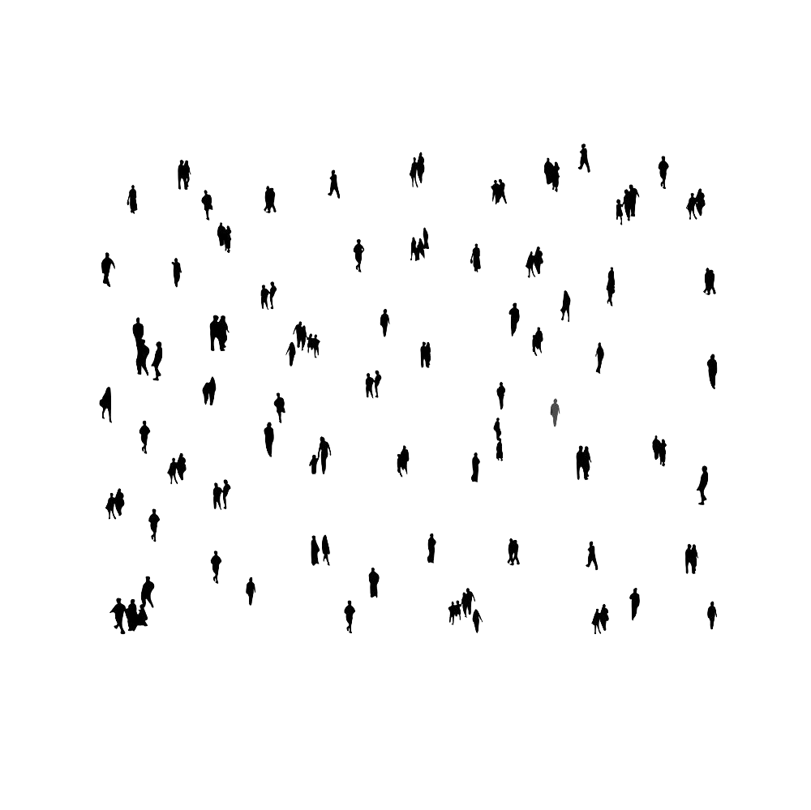

Hi, I’m Riddhi Taunk.
UX Design Student at UAL London
My practice is built around one belief: that good design starts before any sketching happens. It starts with listening.

Click on the dots to view
UX Design Student at UAL London
My practice is built around one belief: that good design starts before any sketching happens. It starts with listening.

Click on the dots to view